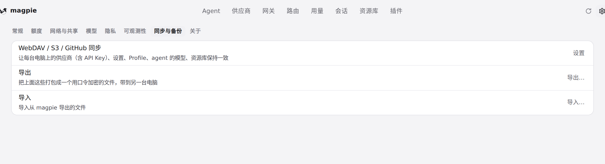
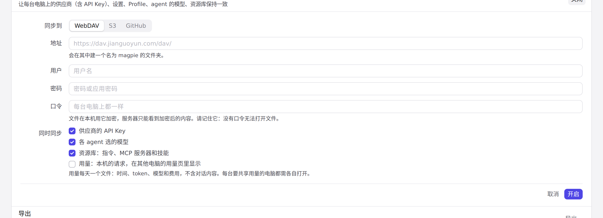
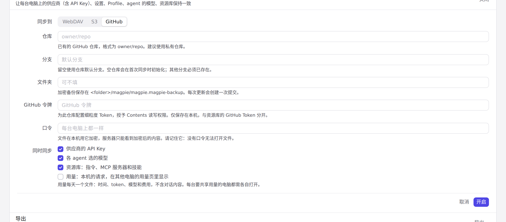
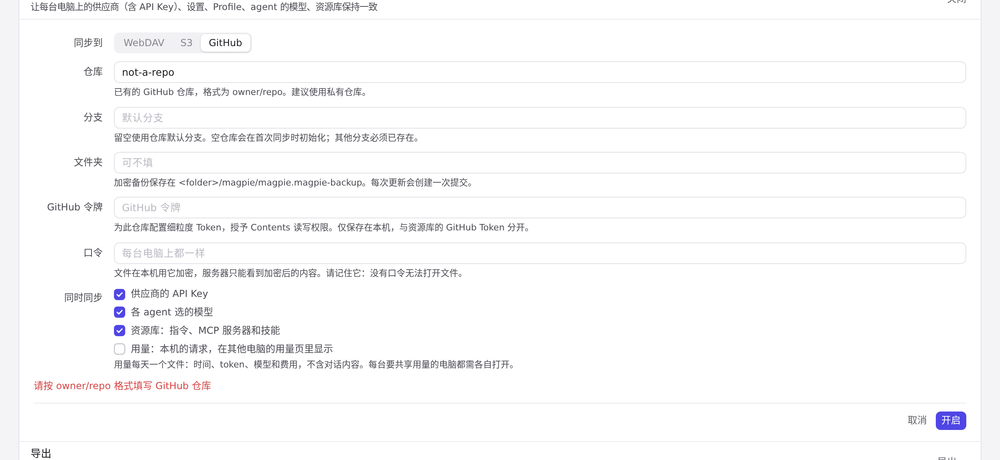

#1130 界面预览
commit 58a0a41 · 回到 PR · 「设置 → 同步与备份」把 GitHub 加入为第三种同步后端：未开启时该行名称改为「WebDAV / S3 / GitHub 同步」，编辑表单的「同步到」多了 GitHub 选项，选中后出现仓库、分支、文件夹、GitHub Token 四个字段及说明（含中/日/德翻译），已保存的非当前后端设置继续保留。
红线是鼠标走过的轨迹，红色圆环是一次点击；底部文字是这一步在做什么。空格暂停，← → 逐段查看。

同步与备份表单里的 GitHub · 未开启同步时的同步与备份一行

同步与备份表单里的 GitHub · 表单打开时「同步到」的选项与字段

同步与备份表单里的 GitHub · 选中 GitHub 后出现的仓库、分支、文件夹与 Token 字段

GitHub 表单的输入校验 · 仓库名不合法时表单下方显示的内容